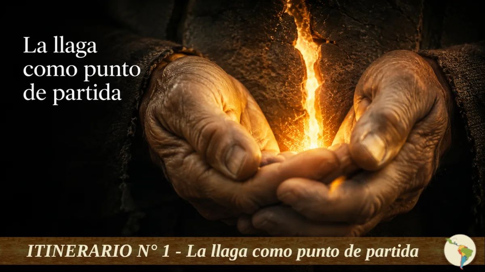
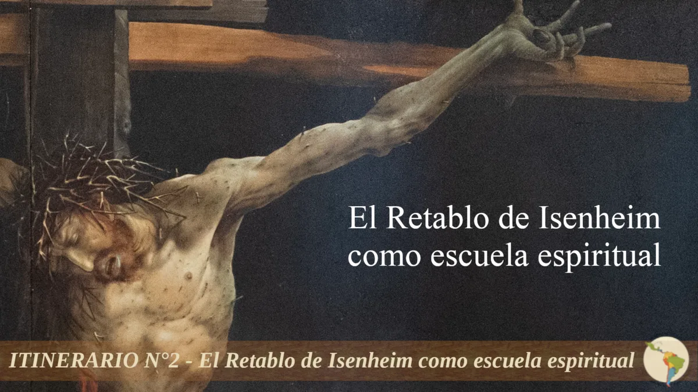
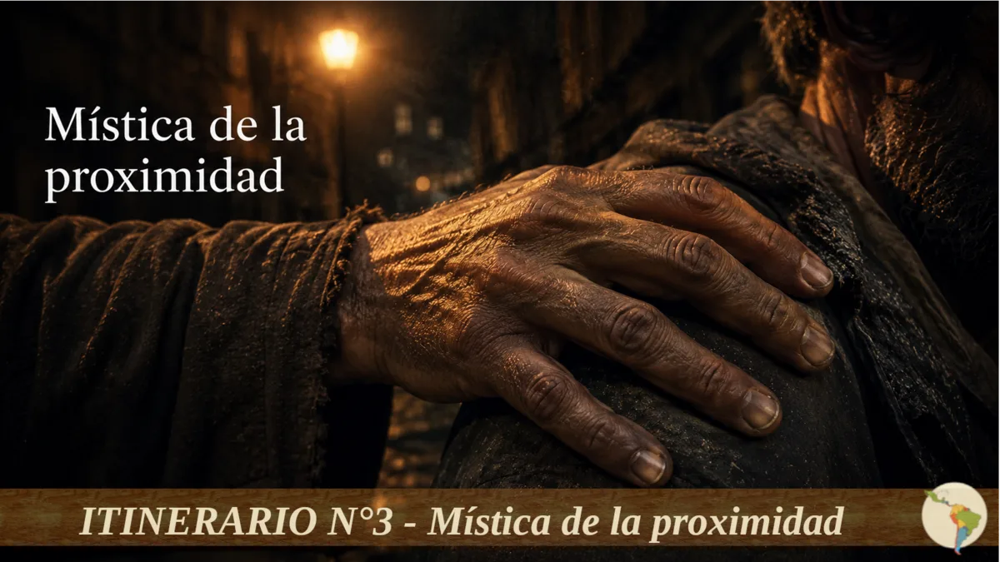
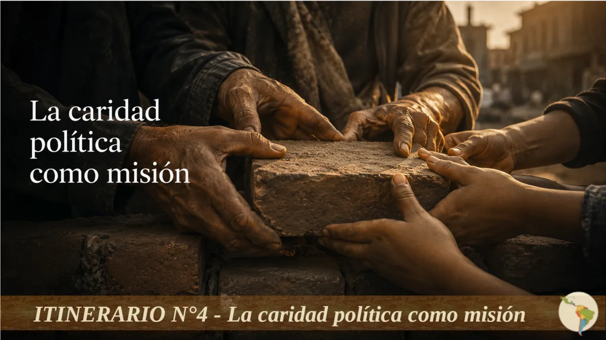
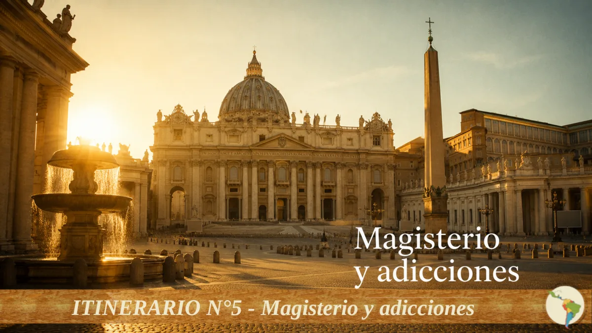

Catálogo de los 30 itinerarios organizados en 7 bloques temáticos.
Fundamentos y mística
para todo agente pastoral

Itinerario 1La llaga como punto de partida
Epistemología ascendente y Ver–Juzgar–Actuar como método de vida pastoral.
§2.1–2.2, §1.1

Itinerario 2El Retablo de Isenheim como escuela espiritual
Leer cada figura del retablo como espejo del acompañante y del acompañado.
§3.1–3.7

Itinerario 3Mística de la proximidad
Achicar distancias, callejear y tocar la carne sufriente como espiritualidad encarnada.
§6.7.3, §7.9.4

Itinerario 4La caridad política como misión
Del acompañamiento individual a la incidencia en políticas públicas y estructuras de pecado.
§6.7.1, §11.8.4

Itinerario 5Magisterio y adicciones
Recorrido histórico desde Juan Pablo II hasta León XIV: cómo evolucionó la palabra de la Iglesia.
§5.1–5.10
Ser social y territorio
para agentes comunitarios
Itinerario 6
Leer el territorio sin romantizarlo
Diagnóstico territorial participativo: barrio, parroquia, escuela, calle y narcotráfico.
§4.1–4.13, §6.1.3
Itinerario 7
Familia comunitaria y crianza compartida
Ampliar la mirada familiar más allá de los vínculos biológicos en contextos de orfandad funcional.
§6.2.4, §6.2.8
Itinerario 8
El territorio digital como nuevo desafío
Adicciones comportamentales, redes sociales, FOMO y pastoral en entornos virtuales.
§4.6, §6.1.4, §9.5.4
Itinerario 9
El drama del trabajo y las 3T
Desempleo, economía popular y las 3T como andamiaje de justicia para la recuperación sostenible.
§4.9, §6.3.1–6.3.2
Itinerario 10
Superar la fragmentación institucional
Acompañamiento inespecífico y trabajo en red horizontal frente al descuartizamiento institucional.
§6.4.1–6.4.3
Itinerario 11
Microcréditos y finanzas solidarias
Economía popular como herramienta de reintegración: guía metodológica y casos concretos.
§6.6.5, §12.4
Espíritu humano y psiquis
para equipos de acompañamiento
Itinerario 12
Vacío existencial y reconexión espiritual
La adicción como patología del espíritu: diagnóstico, acompañamiento y reparación del sentido.
§7.1–7.3, §5.2
Itinerario 13
Pedagogía de la ternura y sanación del trauma
Apego seguro, trauma, EMDR y reparación vincular desde la mirada biopsicosocial-espiritual.
§7.9.5, §8.2, §8.4
Itinerario 14
Misericordia Estructurada en la práctica
El equilibrio entre ternura y regla: seguridad vincular, reparación de la voluntad y límite pedagógico.
§6.3.3
Itinerario 15
Patología dual: cuando el dolor tiene doble nombre
Cuatro modelos explicativos, criterios de derivación y abordaje integral en comunidades pastorales.
§9.5.1, §8.2
Itinerario 16
Escucha activa y herramientas psicológicas básicas
Autoeficacia, diario de emociones, introspección guiada y persuasión social para no especialistas.
§8.7.1–8.7.3
Itinerario 17
Capital de recuperación
Los ocho dominios del capital de recuperación y el rol de las familias de acogida como sostén.
§8.5.1–8.5.4
Sustancias y biología
para equipos con perfil técnico
Itinerario 18
El cerebro y la adicción sin tecnicismos
Sistema de recompensa, neuroplasticidad, recaída y trayectorias de recuperación para agentes pastorales.
§9.3.1–9.3.7
Itinerario 19
Sustancias específicas: lo que el agente necesita saber
Cannabis, alcohol, nuevas sustancias psicoactivas y sustancias legales: baja percepción de riesgo y pastoral diferenciada.
§9.1.1–9.1.5
Itinerario 20
Biología, pobreza y vulnerabilidad
Cicatriz biológica de la exclusión, vulnerabilidad en adolescentes, embarazo y consumo en contextos de pobreza extrema.
§9.4.1–9.4.6
Poblaciones específicas
itinerarios diferenciados
Itinerario 21
Pastoral con mujeres en situación de consumo
Feminización de la pobreza, abordajes diferenciados, tejedoras del cuidado y reducción de daños con perspectiva de género.
§4.4, §6.6.1–6.6.3, §8.6.1
Itinerario 22
Infancias y adolescencias en riesgo
Las 3C de la vida, crianza comunitaria, protección de NNA y pastoral preventiva antes del primer consumo.
§4.5, §11.1.9–11.1.10
Itinerario 23
Pastoral en cárceles y pospenados
Acompañamiento intramuros, reinserción al egreso y el modelo «Fortaleza» de reintegración social.
§4.12, §11.5, §12.5–12.6
Itinerario 24
Hermanos en situación de calle y movilidad humana
Outreach, medicina de calle, reducción de daños y abordaje de interculturalidad y migrantes.
§4.10, §6.6.6, §12.9
Dispositivos y propuestas concretas
para coordinadores
Itinerario 25
Cómo abrir y sostener un centro barrial
Los tres ejes del centro barrial, cómo comenzar, articulación en red y gestión de la sustentabilidad.
§11.1.7–11.1.8, §12.3
Itinerario 26
Modelo ambulatorio vs. residencial
Por qué el ambulatorio es prioritario, sus componentes, criterios de derivación y relación con la comunidad terapéutica.
§11.6–11.7
Itinerario 27
La Pastoral de la Sobriedad
Grupos de Autoayuda (GAA), programa «Nueva Vida» (12 Pasos adaptados) y el rol del agente de sobriedad.
§12.2
Itinerario 28
Prevención escolar y universitaria
La dicción frente a la adicción: construir comunidad educativa donde la palabra tenga lugar antes del vacío.
§11.2.1–11.2.2
Sostenibilidad del agente y gestión de red
para referentes
Itinerario 29
Cuidar a los que cuidan
Autocuidado del agente, acompañamiento del duelo por muertes en el equipo y «Parar para seguir».
§6.7.2, §8.7.4, §11.1.14–11.1.15
Itinerario 30
Construir la pastoral diocesana y continental
Del centro barrial a la pastoral nacional y la PLAPA: arquitectura de niveles, sinodalidad y rolling release.
§11.4, §11.8–11.9, §13.1–13.9